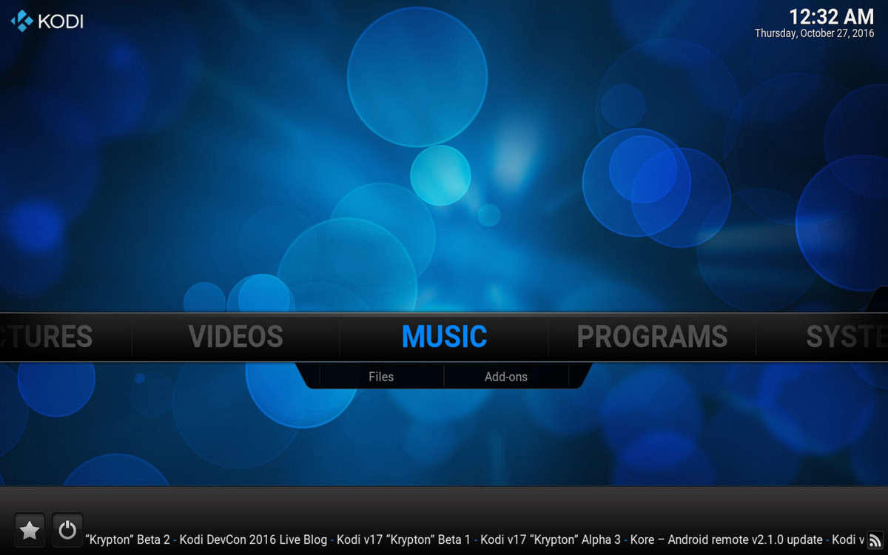

Kodi and Plex share a similar lineage, but have diverged into distinct home media server options.
Setting up a digital media center in your home is a great way to keep all your favorite videos, music and accessible. If you're considering setting one up, there are two main options you should be considering: Plex or Kodi.
Both Plex and Kodi are spinoffs from XBMC, an open-source media player originally developed for the Xbox (hence the XB). Kodi is actually the new name given to the latest edition of XBMC, while Plex was spun off from XBMC's source code back in 2008. Since then, the two services have developed into fully capable media servers with their own strengths and weaknesses.
So let's take a look at both and you be the judge of which one would work better for you and your needs.
Kodi
The first and biggest thing differentiating Kodi from Plex is that Kodi remains open source and always free. The software has been built and maintained by a passionate community who are consistently offering updates and occasionally adding in new features. Whether you're using Kodi on a PC, tablet, smartphone or Android TV box, you get the full software experience scaled to your device.

You can download the Kodi client for Windows, Mac, Linux, Android, iOS (jailbroken) and even Raspberry Pi. Once installed, the easiest way to manage media with Kodi is to make it accessible locally on the machine. Adding local media sources in Kodi is a breeze, whether you're storing your files on the internal storage of your device, an external hard drive connected to your computer, or a SD card inserted in your smartphone or tablet. Kodi also allows you to stream media from any networked PC, though you'll need to be a bit tech savvy to set that up for yourself. Kodi recognizes pretty much any file type, so you can throw all your videos, photos and music in there and Kodi will handle it.
That's another advantage Kodi has over Plex — customization. With Kodi, you're able to download and change skins, including ones specifically designed for mobile devices. This last point is crucial if you're planning to use Kodi on a touchscreen device, as the default Kodi skin is less than ideal on tablets and smartphones.
Kodi a bunch of community-created add-ons, which is where things actually get a bit sticky.
Kodi also supports a large number of community-created add-ons, which is where things actually get a bit sticky. On one hand, there are perfectly legal add-ons that help you integrate other services you may use such as Dropbox, and media sources such as YouTube and Spotify. However, the most popular Kodi add-ons allow you to stream TV shows and movies from the internet — and are unequivocally, 100% illegal. While the Kodi website covers itself by stating, in part, "the watching or listening of illegal or pirated content which would otherwise need to be paid for is not endorsed or approved by Team Kodi", there's no denying that a large portion of Kodi's user base are there strictly for convenient access to pirated content. If you morally object to using an application so closely associated with piracy, Kodi is probably not for you.
Plex
Plex allows you to sign up and create a web-based media server for free. To properly use Plex, you'll need to dedicate a computer to host your Plex Media Server. This can be a computer you use regularly, or a dedicated machine, and can be running Windows, Mac OS X, Linux, or a network-attached storage device. Once you've got your Plex Media Server setup, you're able to add all your digital media to the server and access it via the Plex web-based client on your PC, or via the Plex app on any of your devices.
Seemingly no matter which device you prefer to use, there's a Plex app for it: video game consoles (current and last generation of Playstation and Xbox, as well as the NVIDIA Shield), smart TVs, streaming devices (Apple TV, Chromecast, Roku TV etc.), and mobile devices (Android, iOS, Windows Mobile). Since all your content is conveniently stored on a web-based server, you're able to access all your content across your devices. Nearly every file type is supported.
Where Plex really shines is with its smooth user interface. Plex pulls metadata for all your movies and TV shows from reliable sources, so you get a nice preview image and description for each movie or TV show. You can also create playlists for not only your music, but also episodes of your favorite shows. On top of all the fantastic organization, everything is easy to navigate no matter which device you're using. This experience is all available in the free version of Plex.
Where Plex really shines is with its smooth user interface.
But you might decide to upgrade to Plex Premium when you consider some of the features. Notable features include Mobile Sync, which lets you sync media to any device running the Plex app for offline access, the ability to create multiple user accounts, and a bunch of enhancements to the music section including lyrics, Mood Mixes and more. You'll also get early access to all the latest features being added to Plex, including Plex Cloud (currently in beta) which allows you to without the need for an always-on PC action as your Plex Media Server. Plex Premium costs $4.99 a month, $39.99 a year, or $149.99 for lifetime membership.
Which is best?
Ultimately, the decision of which is best will come down to your needs. If you're looking to set up all your media just on one computer or device, Kodi is more than capable and fully customizable with the option of discovering some really cool add-ons. Tech savvy folks might appreciate how Kodi is open source, and with Kodi you don't necessarily need a dedicated computer to run a server.
On the other hand, the benefits of Plex being commercial software is that there's dedicated support for all your setup needs. Plex is a well-tuned product, and if you're able to dedicate a machine to being your Plex Media Server, you'll have a very good experience streaming your content to all your other devices — even without upgrading to the Premium edition.
Overall, we'll give the nod to Plex for its versatility, premium features, and for overall offering a more polished experience.
What do you think?
Which do you prefer: Kodi or Plex? How do you have your home media center set up? Leave a comment below.

Reader comments
Kodi or Plex: Which media server is best?
Without LIVE TV streaming it's hard to consider PLEX as a complete option as compared to KODI.
Live TV streaming and DVR functionality were added to Plex as of a recently.
I prefer kodi personally, alot more intuitive
I use universal media server along with the smart player app on my phone.
I have Plex but on my ipad I prefer to use Infuse. Nice UI, picks files up from anywhere and recognises everything I've tried without the need to transcode, which I think is Plex's biggest downside. Shame it's currently iOS/ATV only.
Had a quick play with Kodi, not as slick as Plex plus as I've the ipad I want a client where I don't need to jailbreak. Yes both Infuse and Plex cost money but not too much, about £10 for the two.
1) Neither is best they do different things. Kodi is designed for local playback with a variety of media sources, covering simply file/folder lists and coverart media libraries together with a wide range of other features. Plex is a centralized media server that categorizes everything into a coverart media library and transcodes content on the fly to make it work on the client at the other end.
2) Failure to mention Emby which is similar ro Plex but open source, free and Windows focused.
3) Plex is not really an offshoot of XBMC, the creator of Plex was once invited to join XBMC team but when he did he had disagreements about the direction and left founding Plex, the Plex Media Server is closed source software, the original Plex client was an XBMC clone but that long since been retired and the desktop Plex client is a closed source app made by Plex.
4) The optimal platform is MrMC, this is an app store friendly offshoot by former XBMC/Kodi developers so not only does it work on AppleTV/FireTV/Shield etc it has most of the features of Kodi but also a built in Plex client which may be extended to support Emby too, sadly no UWP version of MrMC is planned at this time.
Kodi on an Amazon fire tv stick is the life, I swear. Nothing better.
I doesn't matter which is the best the most important thing is which one you prefer I love plex and nothing can take it place
They both play well together as does Emby. The Kodi addon Plexkodiconnect, which is based on and works the same as the Emby Kodi addon, seemlesly combines the power of the Plex or Emby Media Server with the power and customizability of Kodi without getting in the way of anything else that Kodi does. This solution allows the same server to be shared with Kodi as well as other TV boxes in the house, mobile devices, and outside the home setups while only having to maintain one media collection. At this point I couldn't imagine running my media center any other rway.
kodi is way better, plex is nice but only if you pay for it. i tried it on my devices ,, but i can only playback like 5 minutes orso . and kodi is always free ,, i use it in combination with the emby plugin and enmby software for easier editing of media . also installing plex on nas and then play with the windows phone or android app that i tried and nas cant encode o i cant play mkv files etc m plex says cant stream blabla,, while any other player as app on mobile devices eats everything with no problem,,, so plex might be good but becase of it cant playing more video formats on mibile devices etc it is not that good and not worth paying for it ,, change that and it might be something to think about,
Kodi is not spin of XBMC. It's a rebranding of it. Same thing new name.
Kodi has some excellent skins. Unfortunately every new version seems to break a lot of them, and so there's this total mess of broken/incomplete skins that make the whole experience a messy one at times. The few that do get finished to actual completion (a LOT don't) are really great though.
I prefer MediaPortal over both of these for in-house usage, but run Plex to let my friends access my content from their house. As well as when I'm traveling.
But really looking forward to Mediaportal 2 getting their remote access going.
I used to love MediaPortal. And they still haven't released version 2.0 after more than 5 years...
I never understand why KODI is not working on Windows Phone but on everything else
Me either really disappointing
The huge drawback of Plex is that you cannot watch TV on it.
Kodi supports TV cards or online TV streams which made me quit Plex in favour of Kodi.
Kodi with Exodus is awesome!
I use Subsonic because of the excellent Last.fm integration.
Kodi for Fire stick, and PC
Plex for Roku TV/boxes, Samsung smartTV and, XB1.
I praise Plex for the ease, bought the lifetime pass with no intent to use it but wanted to support the product. As a business they do better overall job. On the cheap for in the house only Kodi for control hands down. The things you can do are unlimited, but it far outweighs the need. At the end of the day a Working Plex via unRAID as container or free mas as a jail is cheaper/easier to setup with network able app enabled TV's.
Kodi on two Raspberry Pi frontends (lounge and bedroom) linked to a Raspberry Pi media server...
Easy answer to this question, Plex hands down. Emby ain't half bad but its BORING as all get out. Kodi is nice but continues to have reliability problems. Local stuff for Kodi is fine, but on the net its spotty.
Plex sucks with lossless audio. I don't want to listen to poorly transcoded music. I want to listen to my music WITHOUT transcoding. I spoke to a Plex engineer about this... "we don't care about audio...just video". I can send lossless audio to my Pioneer receiver with no problem but the interface is terrible.
So what do you suggest? What do you use for good audio?
Emby allows you to set different transcoding settings for audio and video as well as pass through depending on the receiver as needed^^ ;)
Is this the sort of thing that your average person will find obvious to set up and then my family (parents or kids) can easily deal with everyday?
"Transcoding settings"? What and why?
Because with the transcoding settings you could say you don't want your music transcoded ever, which apparently Plex is doing.
It's fairly easy to set up, you have many options of course but if you know what your client can play then you just type those formats into the box and emby won't touch them at all when passing them to the client for playback.
I'm a Plex user, myself. My media is stored on a Synology NAS, but the Plex server is running on my desktop (for transcoding support), and possibly from a Nvidia Shield in the future.
Not mentioned in the article or comments above is that if you subscripe to the Plex Pass to enable remote streaming of your media, they actually do some clever network trickery so that your remote browsing / playing can be done over a secure (HTTPS) connection directly to your server, without the need for you to procure your own encryption certificate.
It isn't an and/or decision. Use OpenPHT. You set up a plex server and you get the better sound and audio options you'd get from Kodi. It's an open source client you can set up that is the best of both worlds. There are also plugins for Kodi like say Plexbmc to use a plex server, but it's a bit older. Kodi can't do half the things that Plex can but it's the best media player you can find.
Does Plex support adding on-line streaming sources? I use that stand-alone with Kodi on my Surface Pro, anywhere, anytime, no worrying about any other device. Stream all the TV episodes I want. Nothing illegal here about streaming, it's only illegal to upload the content.
Definitely kodi
Yes, Plex supports them as add-in "Channels", but they're installed to the Plex server (not the client app).
Who is here with team Serviio?
I use kodi because it doesn't need you to setup a server. The only issue I'm having is windows 10 mobile(W10M) doesn't support kodi. The windows 10 pc does but it's a beta version. Hope kodi comes to W10M soon
Like you I also hoped kodi would support windows 10 mobile, so I did some research. Apparently with the community being so small for W10M, along with devs not liking the restrictions it has, it never really took off. I am currently learning programming right now but I definitely hope in the future I can lend a hand with development if there is ever a project started with porting it over. If anyone else knows any details about it I'd love to hear it.
I am using Plex and it is great once you get it started. The biggest hassle was setting up port forwarding for it. It had some connection issues before I did that, but once I figured that out ot has been pretty damn great. Honestly, this is what Microsoft should be spending money on and buying. Purchase Plex, use your money and man power to simplify the small network issue some of us have to work around, and combine it with your video and TV service and dump that awful Movies & TV app.
I ditched Kodi (XBMC at the time) a 2 or 3 years ago for Plex. The apps are light weight, they're avaialbe for almost any platform you can think of & I can access my library from anywhere with an Internet connection --- well at least I could until I moved and got AT&T U-Verse. I can't figure out for the life of me how to get around firewall in the gateway!
I love and use both software for different use cases! Kodi is configured exactly how I want (feature and skin-wise) in my living room home theater. It's installed on an inexpensive Dell Chromebox modified to only run OpenELEC which in turn is running Kodi. Backend "server" is my Windows 10 PC in my bedroom office. Features that Kodi has that I need for my main TV/projector setup:
- Live TV and DVR by using an HDHomeRun (network tuner) and NextPVR (DVR) as the backend.
- No transcoding of any of my media. Kodi plays everything flawlessly including my uncompressed ripped Blu-rays with HD audio like Dolby TrueHD and DTS-HD-MA. I think Plex does this too, but that depends on device hardware and OS.
- Playback of ISO files (DVD or Blu-ray native disc image files), although I've transcoded all my media to MKV container files.
- UI/skin customization and video library views. Kodi gives you almost endless ways to customize and view your content. Plex gives you one--their way or pretty much nothing else.
- And the hundreds of other small, geeky features that Kodi has that we diehard home theater people love and let us tinker with.
But for any other device, I absolutely love Plex more for! I subscribe to a yearly Plex Pass as well. My wife and children can easily watch on any smartphone, tablet, or TV device like our Amazon Fire TV 2 or Xbox One. Plex literally has an app for everything. And they are well-designed too. The only major feature that I'd like Plex to do is live TV, but they have said numerous times that it goes against their philosophy. Maybe that will change in time... And I wish they had more customization in their UI.
Kodi works extremely well on Amazon FireTV 2. The install is easy and does not require root. Amazon even now includes Kodi icons for when you install the app and permits it in your favorites, recents, and quick-access app locker.
Plex for local media streaming. Kodi for IPguys.
Just received an email from Plex offering me the Plex Pass Lifetime for $74.99. If you have Plex now, check your email.
I'm already a lifetime subscriber, but I've got a friend who was considering getting a lifetime pass, and this might be the thing to push him over the edge. Was there a (non-personalized) URL in the email that I could send his way?
I used to use XBMC (Kodi) but since I discovered Plex I never looked back. Plex is basically compatible with each devices and incredibly rich with loads of features. My favorite piece of software for movies, music and pictures.
Echoing a few others here, I started with a dedicated kodi pc as my front end, but nearly everyday something would break and I spent more time fixing things than watching TV. It became a nightmare to maintain. I switched to plex and now use an Xbox one as my front end and haven't looked back. A much better experience if you can run a dedicated pc on your network for plex. My only complaint is I wish the Xbox internal player that plex has to rely on would support DTS and the lossless codecs.
I've been using kodi(xbmc) for many years now. Its a great media player. Right now I use openelec so when I fire up my htpc it boots directly into kodi. Then I use a Linux supported remote, hdhomerun prime and WMC to record tv and act as the backend for kodi's live tv and EPG. Also use kodi to store my digital copy's of my blu rays and recorded tv from wmc. For me personally i like kodi's interface alot better its easy to configure settings and to your content. I configured it once and haven't had any problems. I just check once a week to make sure my shows are being recorded and that's it. Plex is a nice alternative but I'm sticking with kodi.
I have WDMyCloud4100 NAS, installed Plex... It failed to play many of the formats... keep digging in and trying all possible setting on the NAS without any success....I was going to pay $149 but there is no solution or support so far so moved back to VLC and Duplex player.
Although, on for phones so far nothing as good as Archos Video on Android! It's simple, easy to use and plays any format with codec pack!
Maybe try Emby (Media Browser) if it's available for WD systems as well :).
Plex sounds stange while playing lossless audio. Otherwise it's nice idea sine my library is on server.
I am wary of open source software. Sure it's free and usually there is a committed & passionate community involved in development and promotion. However, open source can also mean there ends up being too many variants of the software floating around and more time is spent by the potential user on doing their research in filtering out the 'good' from the 'not as good'. This is one of the reasons I've shied away from Linux.
So in this case I've adopted Plex running on a Synology NAS. Works awesome-sauce.
Am I missing something? Once I purchased Microsoft's Wireless Display Adapter I haven't need to setup home media server, I just stream movie and videos directly to my TV from my Windows 7" tablet or my smartphone or my PC.
I use Kodi with network storage attached to my router. Streams media to all my networked devices and smart TVs without needing to mirror from another device.
I love the media library views of kodi, and like the network funcrions of plex. Still I prefer kodi due to the way the library is represented.
I used WMC until about 800 movies, it became extrame slow and unstable. got all my meta data from My Movies, which Kodi reads fine, I don't even want to imagine what it would mean moving over to Plex and having to find all those movies again... (collection has grown since then)
I wish they'd bring back WMC. Best live TV experience I've seen.
Yes, and our Windows Media Center (WMC) is still running. The whole house Windows Media Center serves Xboxs on every TV in the house. It is family friendly and truly amazing. Especially the live and recorded cable TV using cablecard for DRM protected content like HBO just doesn't exist on other solutions.
That all said, I know I'll have to switch to something else in a few years, so I read these comments to see what is the current state of the other solutions. I'm hoping, when the time comes, that there will be a solution that has all the WMC features (including live cable, including DRM, and over the air TV served throughout the house, ...) plus more.
Yep, we all pray. (Multiple lobby/petitions and requests across the web if you haven't signed/voted etc.)
They won't though - very quiet on the topic. Real shame as it was ground breaking software, before its time, but never promoted by Microsoft (sounds familiar, *Deja vu*?).
Wish, at least, they'd open source it as there is so much support a team of volunteers would easily pick it up and drive development and modernisation.
My true hope, given Xbox, Windows 10 Universal, HoloLens etc., would be that they have/are secretly developing an extensible UWP PVE/DVR, for media sources (e.g. third party UWP apps, such as the people integration) - allowing one interface for it all.
A new Windows 10 Media Center for all devices.. just imagine, "Hey Cortana, I'm running late, please record The Late Show for me".
We tried Kodi (then XBMC) for a while, leaving a computer hooked up to the TV and with an old Windows Media Center remote that XBMC supported. The range of plugins are great - not just for accessing content but also for things like how to sort TV episodes - and being able to personalize the look is a bonus. But ultimately it was a pain to run a dedicated Windows computer. It might have been better if we had a super-fast OS that booted directly to it, but we would turn it on, wait a while for it to load, stand by the TV using the trackpad to open the app, then we could sit down and use the remote.
Instead, we now have a relatively-cheap NAS running Plex out of sight that is always-on, other than when it automatically turns off overnight to save power. Then we can use Plex on the Xbox or PCs much more conveniently. Not as much flexibility in design, but does everything we're looking for: fast and easy access to our movies on lots of devices, not digging through piles of Blu-ray and DVD discs for something to watch.
Which NAS did you buy?
Is this Kevin Rush from Applied Minds?
No, sorry. I don't know what Applied Minds is. I'm an Architect in Minneapolis Minnesota USA.
My custom built Greens and UnRaid boxes I set to turn on at x time via the bios and scheduled task to shut down. With my qnap, I do a VM that remotes via SSH and shutdown, and when my UnRaid pops on sends a wake-up command to the qnap. Crude method but easy and effective.
Kodi on an Amazon fire tv stick, nothing better.
for all of those looking for a dedeicated htpc OS csn i suggest libreelec , its a linux base built to probie just whats needed to run kodi. The only short commings i found was that its lacking the support of items such as netflix , amazon vieo etc there are user built addons that can help but they are a bit of a faff to setup.
This is why i switched to an Nvidia shield box ,direct acess to the android apps from kodi so i get the streaming goodness , addons and customisation of kodi but the app base of android.
Kodi one and the best.
How about MediaPortal ?
Been very happy with Kodi as a front-end GUI (with extra software filtering) and NextPVR in the background doing the heavy DVR lifting.
Not to mention the Plex is in the process of adding DVR features (currently in beta)!
This interests me, as I've been hobbling along on WMC on Windows 7. It's the only one that I can get the EPG working, and even then it takes some hacking on initial setup. Will it be free under Plex?
To my knowledge they haven't identified whether it will be exclusive to Plex Pass members or not. I'd imagine it probably will be as they probably pay for access to the EPG data, but time will tell.
Emby (I mention above) does all of this already, with a nice guide/live tv/DVR interface.
Jail for free mas non existent, and no docker for UnRaid ATM.
You talking about the NAS version of the server/service? Not used it - I'm still running as a service on a Windows (10) platform, we use the PC for living room use as well (and as the primary 24/7 client).
Years ago when I tried to setup XMBC(Kodi) it was a constant headache. I started using PLEX after that and never looked back.The new PLEX DVR works as good or better than WMC ever did. Just need a beter, less cobbled together option for live TV in PLEX.
Kodi is so easy to set up now, my mom just did it with a YouTube video
Why is Emby not mentioned again?? Should add: W10 UWP apps currently free for Windows 10 Mobile and Desktop, together with live TV (that doesn't use WMC as a backend).
Thanks for the suggestion. Since Plex has went premium only for Plex Media Player and the UWP App, I've been looking for an alternative. Kodi drives my wife nuts.
Edit: NM it looks like Emby went the same direction, their theater app requires premium or download old unsupported app. Guess I'll have to pay the piper. I may try Emby's UI/UX before deciding which one I'd like to continue with.
If you're a long term use of WMC, you might be more familiar with Emby under the name "Media Browser". Since then its been mostly rewritten from the ground up, including: automatic sorting of Media, automatic meta (descriptions, artwork, ratings, actors, etc.), cloud syncing, live TV, guide and DVR.
Couldn't do without it and the recent live TV improvements mean I am on the verge of dropping Media Centre entirely.
From my experiences, no other solution (*especially* Kodi or XBMC!) come close to WMC in terms of ease of use (family), parental control (family), requirements (often WMC TV services), "6ft/8ft experience", ease of setup or general looks/GUI.
As a client, Kodi is great for customization, getting your hands dirty, Plex and Emby can't touch it, and can play pretty much anything you throw at it. Once you set it up to your liking, Kodi's experience is bar none, but it does take a lot to achieve that, I reckon. Once it is all said and done, and in Kiosk mode, you can make it as user friendly as Plex so your wife should not have problem with.
However, Plex is better as a media "server", if you have mobile devices, etc. Emby still a few steps behind on development, but it is a great alternative. A combination of Plex (or Emby) and Kodi is the win for me. I wouldn't change Kodi's front end for the world.
Plex isn't just great for mobile devices, the support for Google chromecast is incredible, that's how I use it. It also means I can rapidly expand it to another TV.
Plug in a new Chromecast, set it up, <5 mins. Boom. I can cast my entire media library to it.
Kodi means not having a library at all ;)
I agree "Emby" is one of the best media programs I have used for a longtime. It's a server/client solution and support most os's - it even has an app for my Samsung TV. https://emby.media/
Although it's solid and works well it lacks in the privacy department. If you keep Plex in your house only and don't allow outside your LAN, then no information is sent out. Kodi doesn't send any information at all. My wife has every Disney movie ever made on DVD/Blu-ray and spends a fortune Everytime they open their vault to Blu-ray/remastered. Disney sends us a nice letter every year and we send them invoices. Note: Emby scans your content and sends it immediately. I'm a straight and narrow, but many people who Use Plex and Kodi are not with digital media collections. When you hit 750+ big titles on episodes, you tend to draw attention with programs like Emby and a mismanaged Plex.
I also forgot to mention Envy's jail via Greens is a failure, as is its docker for UnRaid.
Greens was an auto correct for Freenas
According to their website, the W10 app requires Emby Premier if you want to actually playback stuff. Free to browse only.
And that's one of the reasons why I ditched Emby for Plex. The Plex app for Xbox One just works and is free to stream with. While I do wish Plex would update the Xbox One UIX to match the HTML5 interface, it's better than Emby IMO. Plus, Emby doesn't have an official Xbox One app yet, while Plex has had one for a long time, is just a bonus.
You should get a free trial. After which... once you know which solution works for you (Emby/Plex/other) you can't complain at the small fee for a "lifetime" of the setup. For me, for Emby, the fee is more than fair for just sorting, filing, labelling and meta-tagging my >10tb of media, let alone the daily use of the server, plug-ins, web-use and apps!! (Though I did subscribe years back in the early days of Media Browser as a WMC plugin!!)
I'm not dissing Plex for the record, just for our family/hardware setup, EMBY provides the best solution.
Wow. I wasn't aware of Emby's existance until now. I've been pulling my hair out due to Plex bugs and other imperfections. So far Emby is looking like a far better solution! It's not quite as pretty, but almost just as functional and faster.
IMHO Plex is great for video but completely sucks if you want to use it as a general media player. For example, it takes Plex two days to import my music collection. Emby did it in under two hours and was just as accurate. Furthermore, my music listening sessions are typically genre based, and despite that being something that is stored for each track, Plex only manages genre information at the album level. This completely screws up my genre based listening sessions. Emby does this correctly too (like pretty much every other media player on the market).
I'll test an Emby client on a Raspberry Pi3 and video streaming tomorrow. Plex has been one disapointment after another for me. I'll be really happy if I can replace it with Emby.
So far it's looking good. My preliminary judgement is that Emby is the best of these three.
I use Emby and think its awesome! Great apps for a range of server devices (NAS, Win, Linux), great support for all mobile platforms (inc Windows phone), browser clients etc. Transcodes and streams remote and local really well. I think best of all is that its open source and has a great community forum that the devs are really active in. I've been using Media Browser / Emby for about 3 years now, it is definitely worth a look.